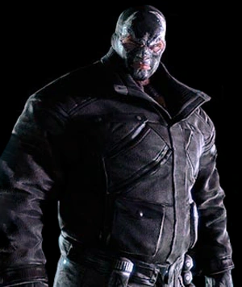

BANE
Bane é um condenado fugitivo de uma prisão insular
na América do Sul e um supervilão/assassino. Bane
tem força física anormal como resultado de ter
passado por experimentos envolvendo um derivado da
droga Venom. Ele ficou conhecido como "O Homem que
Quebrou o Morcego" quando quebrou as costas do Batman,
forçando Bruce Wayne a desistir da persona do Batman
enquanto se recuperava. Bane foi originalmente criado
pelos escritores Chuck Dixon e Doug Moench e pelo
artista Graham Nolan , a partir de um conceito de
Denny O'Neil . Ele apareceu pela primeira vez em
Batman: Vengeance of Bane #1 (janeiro de 1993).